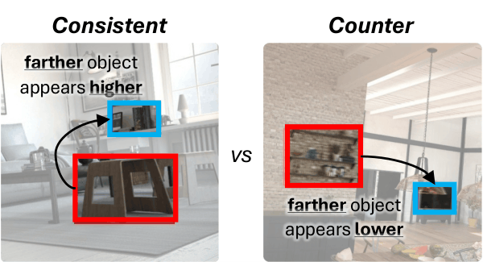
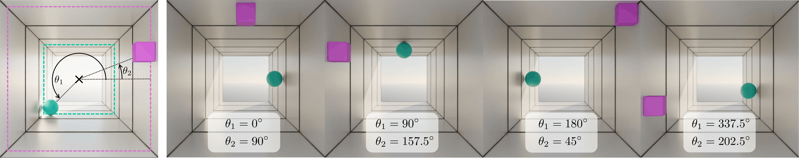
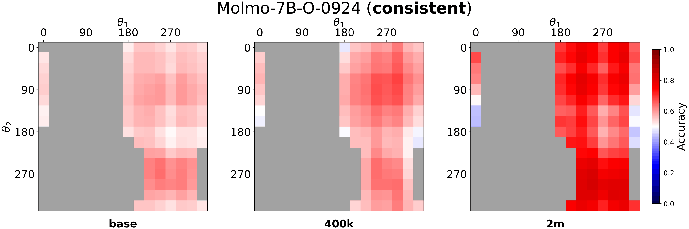
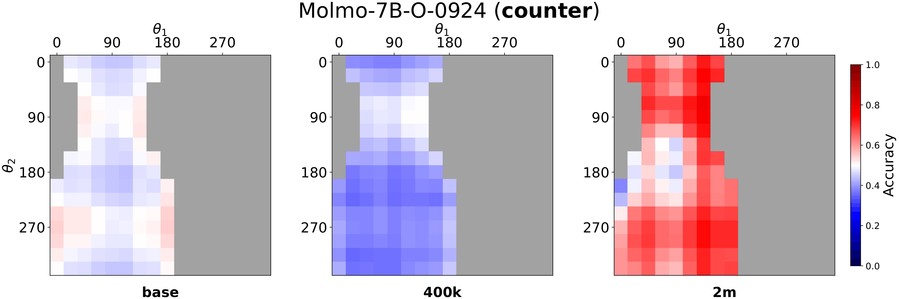
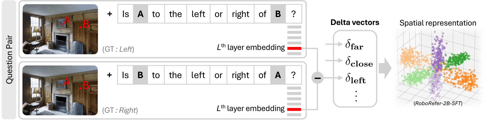
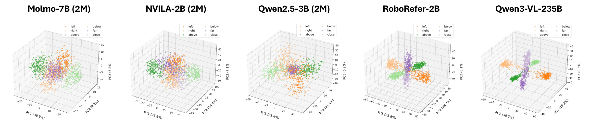
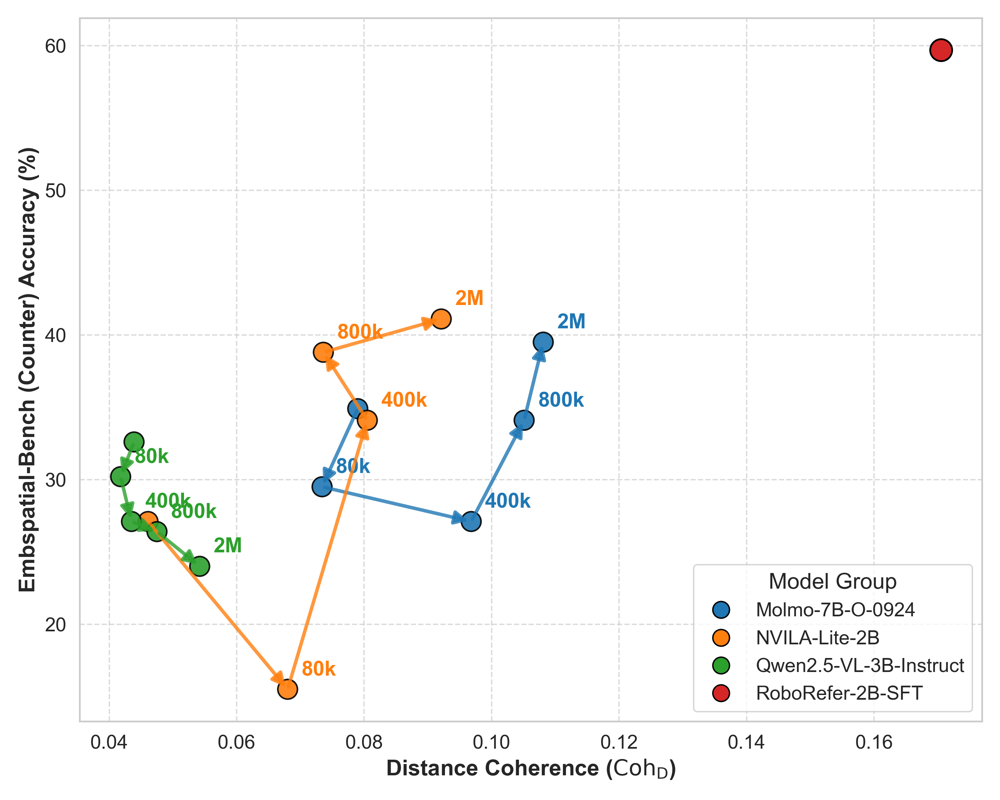
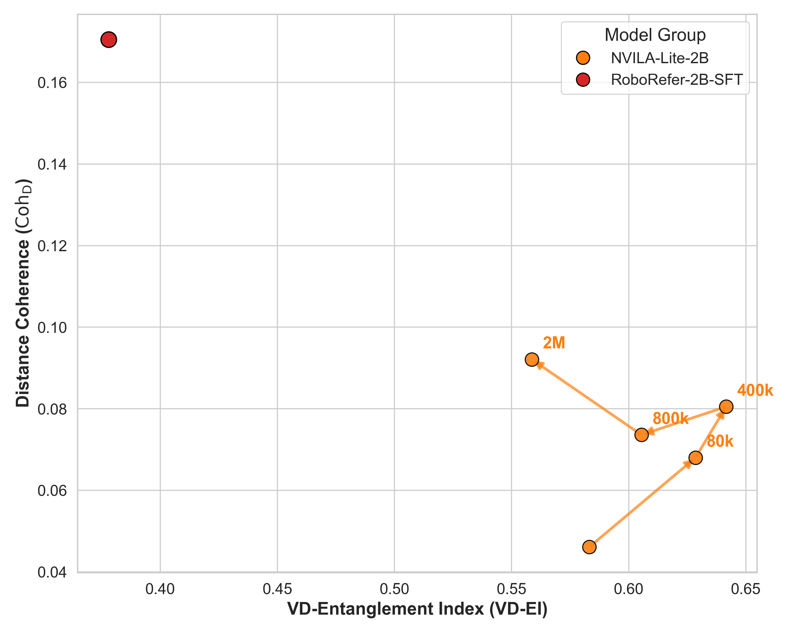

Vision-language models (VLMs) achieve strong performance on spatial reasoning benchmarks, yet it remains unclear whether this reflects structured 3D understanding or reliance on statistical shortcuts in natural images. We introduce a representation-level analysis framework that constructs minimal contrastive pairs to measure how spatial axes are organized and disentangled within VLM embeddings. Our analysis reveals a consistent vertical-distance entanglement: models conflate vertical image position with distance, mirroring the perspective bias of natural photographs. This bias produces a significant accuracy gap between perspective-consistent and counter-heuristic examples, and intensifies under data scaling even as overall benchmark accuracy improves. We further show that models with similar benchmark scores can exhibit markedly different internal representations, and that these differences predict accuracy and robustness across diverse spatial reasoning benchmarks. To isolate this bias from evaluation-set skew, we introduce SpatialTunnel, a synthetic benchmark designed to expose spatial shortcut biases by removing common correlations present in natural images.
§ 01 — The Puzzle
Some models are inconsistent across benchmarks — strong on one, weak on another. Others are uniformly robust. Why?
| Model | EmbSpatial Overall |
CV-2D Relation |
CV-3D Depth |
CV-3D Distance |
BLINK Depth |
BLINK Spat. Rel. |
|---|---|---|---|---|---|---|
| Molmo-7B | 60.7 | 76.3 | 84.5 | 68.5 | 78.2 | 70.6 |
| NVILA-Lite-2B | 54.0 | 58.6 | 69.2 | 52.3 | 64.5 | 67.1 |
| RoboRefer-2B | 92.0 | 96.5 | 95.7 | 90.5 | 84.7 | 79.7 |
| Qwen2.5-VL-3B | 62.3 | 67.4 | 70.3 | 60.2 | 68.6 | 83.9 |
| Qwen3-VL-235B | 82.0 | 96.5 | 93.3 | 91.0 | 84.7 | 90.2 |
| More baseline models will be added. | ||||||
§ 02 — The Shortcut
VLMs exploit a statistical regularity in natural images — objects appearing higher tend to be farther away — using vertical position as a proxy for depth.

In everyday photographs, perspective projection creates a reliable correlation: farther objects appear higher in the image. VLMs trained on such data may internalize this as a shortcut, conflating 2D vertical position with 3D depth rather than reasoning about 3D structure directly.
One natural question: can we simply train away this bias with more spatial data? We fine-tuned each model on a mixture of five spatial reasoning datasets — SAT, RoboSpatial, SPAR-7M, RefSpatial, and PRISM — at four scales (80k, 400k, 800k, and 2M total samples). Click below to compare.

Fig. 3: SpatialTunnel holds the two objects at fixed depths while sweeping their angular positions around the tunnel cross-section, so that 2D image-plane layout varies independently of depth ordering.


Fig. 4: Mean accuracy heatmaps on SpatialTunnel for Molmo-7B. Accuracy on consistent cells improves steadily. In contrast, counter cells remain substantially harder, with the largest drop at 400k and a partial recovery at 2M.
§ 03 — Framework
If the bias is model-intrinsic, we need to examine the representations directly.

RoboRefer-2B values shown (best model). CohD remains lowest across all models even after 2M-sample fine-tuning.
§ 04 — Findings
PCA of delta vectors reveals the structural difference — answering the puzzle from §01.


As CohD grows through fine-tuning, counter accuracy rises. When CohD stagnates, accuracy stagnates too.

RoboRefer occupies a unique region of high coherence and low entanglement.
Representation structure — not benchmark accuracy — reliably indicates genuine 3D spatial understanding.
@article{min2026whyfarlooksup,
title = {Why Far Looks Up: Probing Spatial Representation in Vision-Language Models},
author = {Min, Cheolhong and Jung, Jaeyun and Lee, Daeun and Jeon, Hyeonseong and
Su, Yu and Tremblay, Jonathan and Song, Chan Hee and Park, Jaesik},
journal = {arXiv preprint arXiv:XXXX.XXXXX},
year = {2026},
}